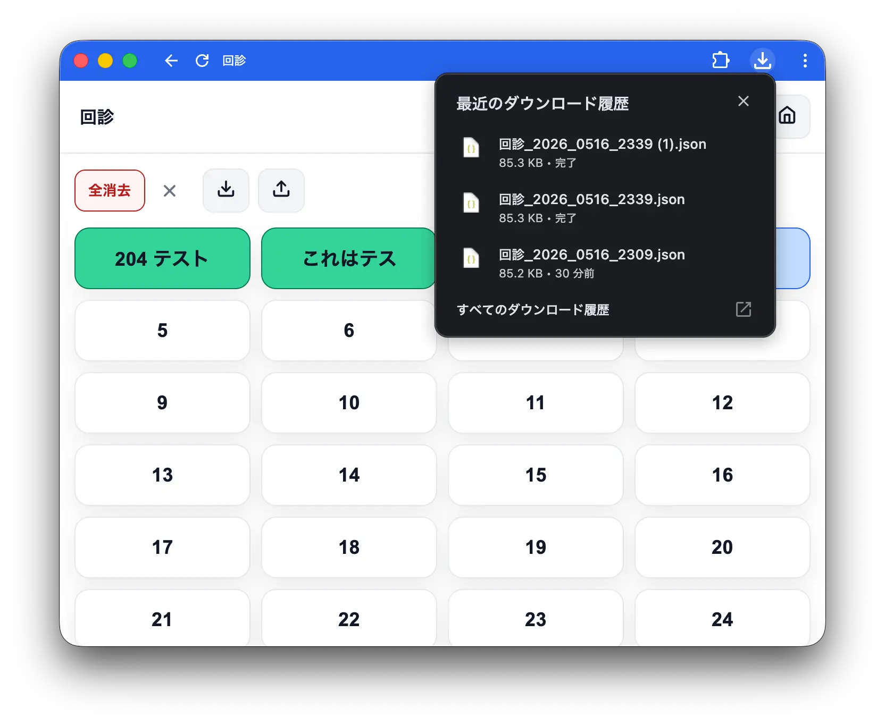
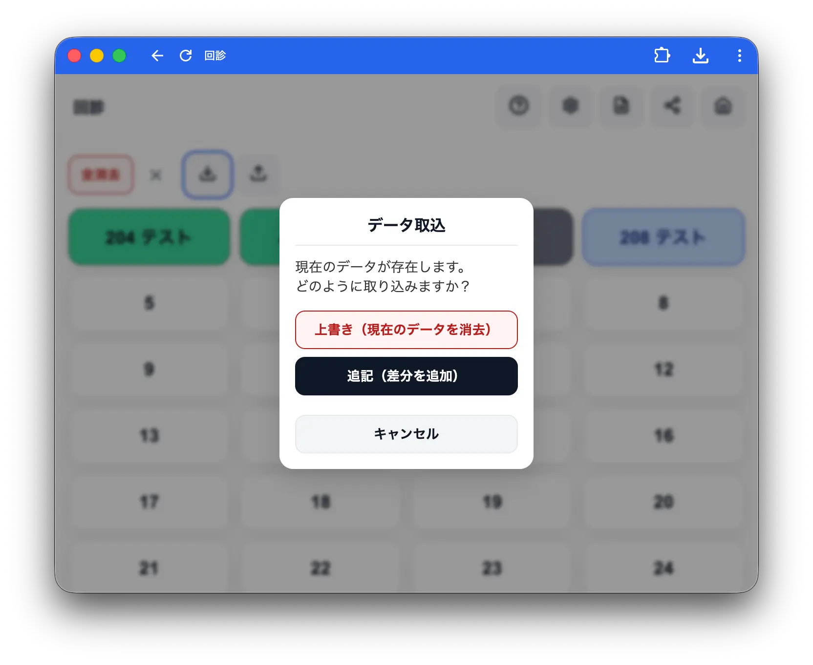
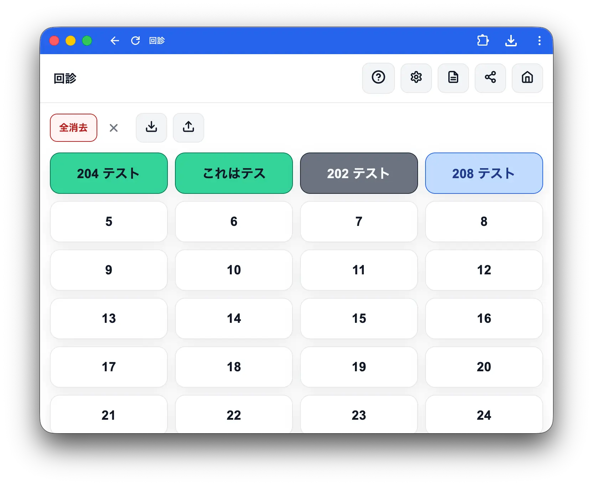
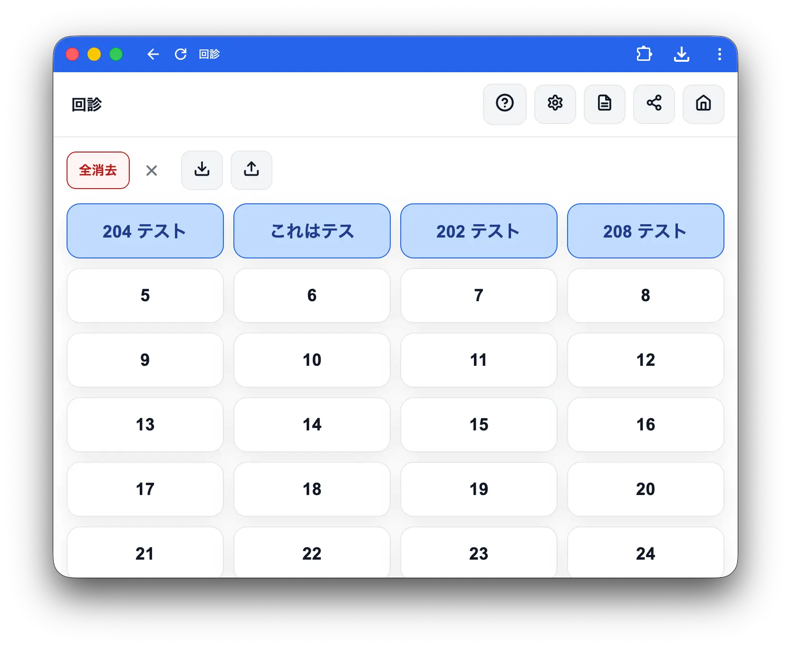
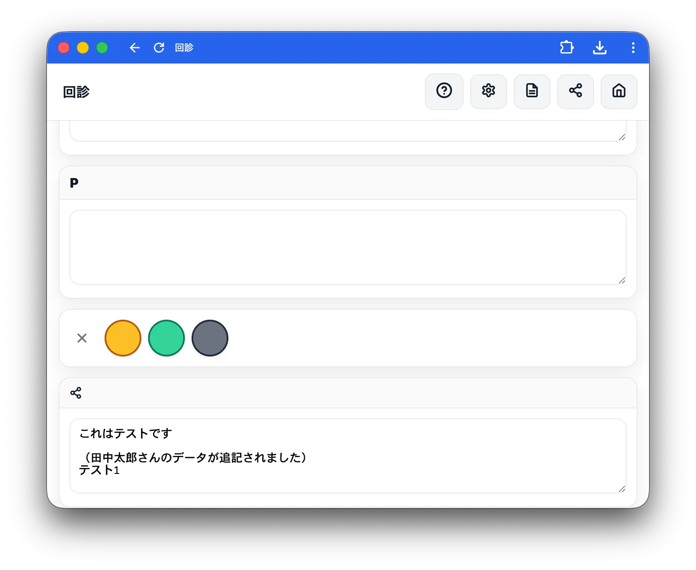

データの取込・保存
ホーム画面の上矢印アイコン（保存）・下矢印アイコン（取込）から操作します。
保存

上矢印アイコン（保存）をタップすると現在のデータをJSONファイルとしてダウンロードします。ファイル名は タイトル_日付_時刻.json 形式です。
回診終了後や定期的に保存しておくことを推奨します。 ブラウザのデータ消去や端末の初期化でアプリ内のデータが失われた場合でも、保存したファイルから復元できます。
取込
下矢印アイコン（取込）をタップするとファイル選択画面が開きます。保存したJSONファイルを選択してください。
既存データがある場合は以下を選択できます。

| 操作 | 内容 |
|---|---|
| 上書き | 現在のデータをすべて削除してインポート |
| 追記 | 現在のデータに差分を追加 |
注意: 上書きを選択すると現在のデータは元に戻せません。事前に保存でバックアップしておくことをお勧めします。
追記について


追記を選択すると、インポート元のデータが現在のデータに差分追加されます。追記された患者のステータスは自動で青になります。追記されたテキストには「（患者名のデータが追記されました）」と表示されるので、元のデータと区別できます。

患者の対応付けは番号順で行われます。取込前に患者の並び順が一致しているか確認してください。
注意: 追記機能は現在改善中のため、今後動作が変わる可能性があります。